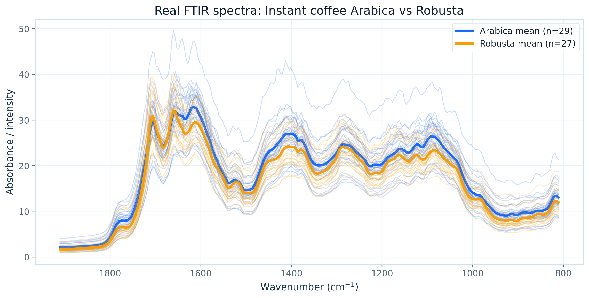
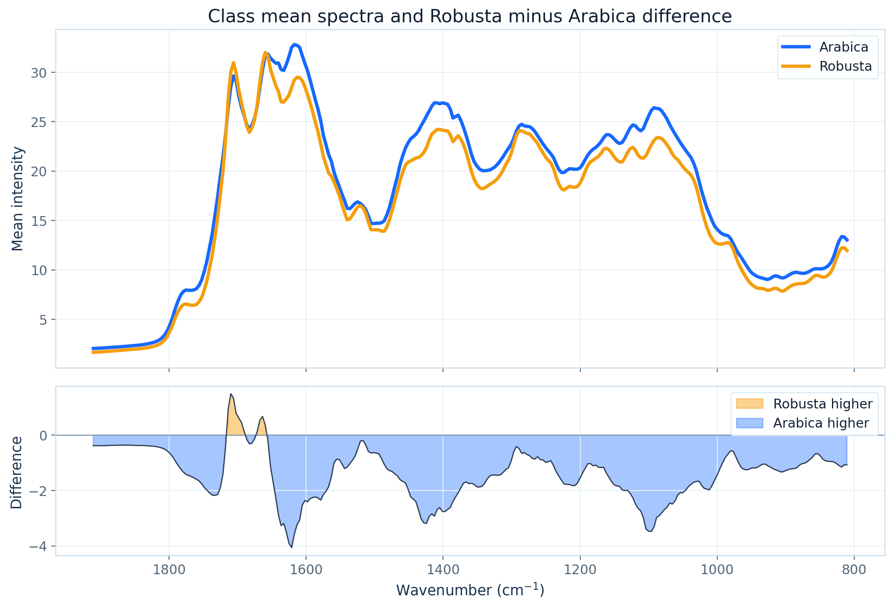
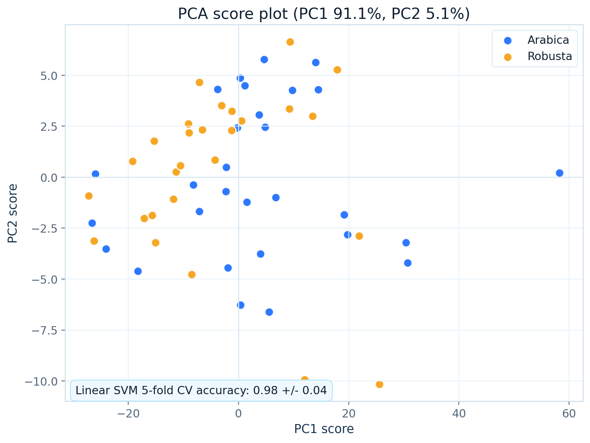
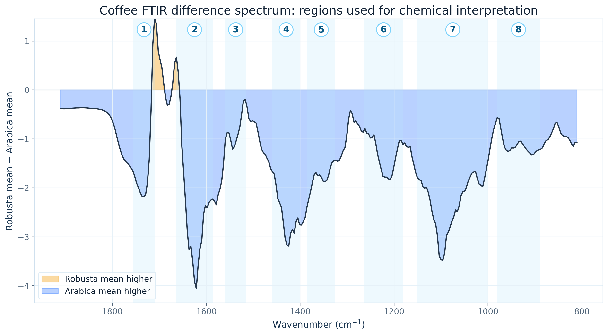
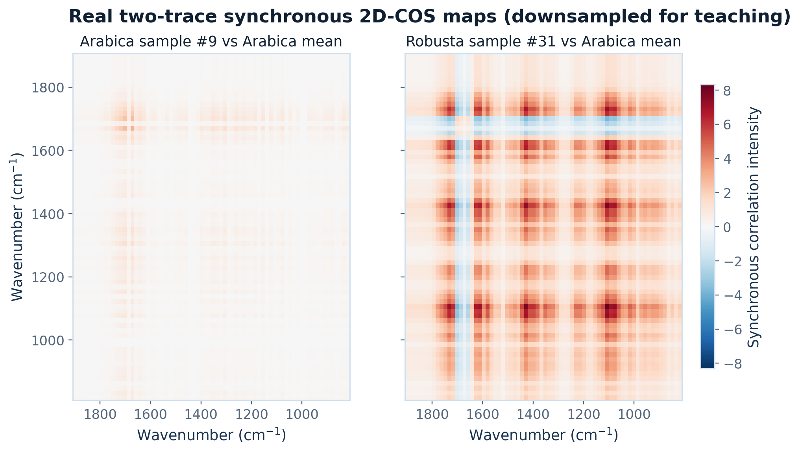
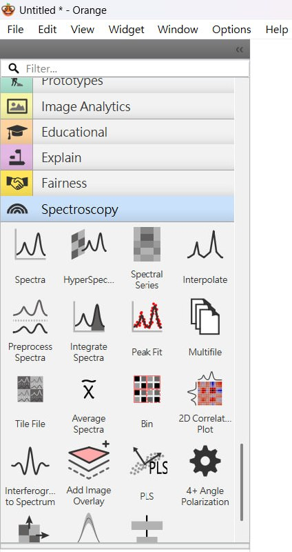

Instant coffee
56 個 MIR-DRIFT spectra；Arabica vs Robusta。最適合第一個示範，資料小、類別清楚。
classificationcoffee authentication這一章會帶你把一維食品 FTIR 光譜整理成 sample × wavenumber 矩陣，先做 PCA / PLS-DA 的基礎判別，再進一步把光譜轉成 two-trace 2D correlation maps，作為機器學習或影像模型的輸入。
資料來源是 Data for: Spectra Data Classification with Kernel Extreme Learning。它不是專門為 2T2D-COS 建立的資料集，但因為每個樣本都有完整 FTIR spectrum 與類別標籤，非常適合用來教「從一維光譜生成 2D correlation image」。
56 個 MIR-DRIFT spectra；Arabica vs Robusta。最適合第一個示範，資料小、類別清楚。
classificationcoffee authentication120 spectra，來自 60 個 extra virgin olive oils，每個樣本有 duplicate acquisition。適合討論 replicate 與產地判別。
replicatesorigin983 個 ATR-FTIR spectra；Strawberry vs non-strawberry / adulterated puree。適合進階分類與 spectral-image model。
adulterationlarge n以下圖形直接由 Mendeley coffee FTIR CSV 重新計算產生，不是示意圖。學生可以先用這些圖建立參考答案，再回到 Python / Orange 檢查自己是否得到相同趨勢。




已完成的一維 FTIR × PCA / PLS-DA 教學頁，可作為本頁 2T2D-COS 前的 baseline：先看原始 FTIR 光譜如何做 Arabica vs Robusta 鑑別，再比較 2T2D 影像化後多了哪些 band-to-band pattern。
GC 層析指紋同樣用 Arabica vs Robusta 作為食品真偽案例。可拿來對照：FTIR 是官能基 / 整體組成 fingerprint；GC 是揮發性或層析峰型 fingerprint，兩者的化學選擇性與特徵解釋方式不同。
同樣是 coffee authentication，FTIR、GC、2T2D-COS 分別回答不同問題：FTIR 看官能基區域，GC 看分離後峰型，2T2D-COS 看光譜區域之間的相關圖樣。學生可比較哪一種最容易解釋、哪一種最適合快速篩檢。

原始 FTIR 是一條曲線：每個 wavenumber 對應一個吸收強度。2T2D-COS 把兩條光譜，例如「class mean spectrum」與「單一樣本 spectrum」，轉成一張二維 correlation map。
一般 PCA / PLS-DA 直接看各波數的強度；2D map 則呈現 band-to-band 的共同變化。這可作為 CNN 或 image-based ML 的輸入，也可用來討論哪些區域共同貢獻分類。
下面程式會下載 Mendeley zip、讀取 coffee FTIR CSV、整理成 X: samples × wavenumbers，再產生每個樣本相對於所屬類別平均光譜的 2T2D-COS maps。
import io, zipfile, requests
import numpy as np
import pandas as pd
from sklearn.preprocessing import StandardScaler
from sklearn.decomposition import PCA
from sklearn.model_selection import StratifiedKFold, cross_val_score
from sklearn.svm import SVC
url = "https://data.mendeley.com/public-api/zip/frrv2yd9rg/download/1"
r = requests.get(url, headers={"User-Agent": "Mozilla/5.0"})
r.raise_for_status()
z = zipfile.ZipFile(io.BytesIO(r.content))
coffee_file = [f for f in z.namelist() if "instant_coffee" in f and f.endswith(".csv")][0]
raw = pd.read_csv(z.open(coffee_file), header=None)
sample_id = raw.iloc[0, 1:].astype(str).to_numpy()
group_code = raw.iloc[1, 1:].astype(str).to_numpy()
y = raw.iloc[2, 1:].astype(str).to_numpy() # Arabica / Robusta
wavenumber = pd.to_numeric(raw.iloc[3:, 0]).to_numpy()
X = raw.iloc[3:, 1:].T.astype(float).to_numpy() # samples × wavenumbers
print(X.shape, y[:5], wavenumber.min(), wavenumber.max())Xz = StandardScaler().fit_transform(X)
pca = PCA(n_components=2).fit_transform(Xz)
clf = SVC(kernel="linear")
cv = StratifiedKFold(n_splits=5, shuffle=True, random_state=7)
scores = cross_val_score(clf, Xz, y, cv=cv)
print("CV accuracy:", scores.mean(), scores.std())def noda_matrix(m):
N = np.zeros((m, m))
for j in range(m):
for k in range(m):
if j != k:
N[j, k] = 1 / (np.pi * (k - j))
return N
def two_trace_2dcos(sample, reference):
Y = np.vstack([reference, sample])
Y = Y - Y.mean(axis=0, keepdims=True)
N = noda_matrix(Y.shape[0])
sync = Y.T @ Y / (Y.shape[0] - 1)
async = Y.T @ N @ Y / (Y.shape[0] - 1)
return sync, async
class_mean = {c: X[y == c].mean(axis=0) for c in np.unique(y)}
sync_maps, async_maps = [], []
for xi, yi in zip(X, y):
s, a = two_trace_2dcos(xi, class_mean[yi])
sync_maps.append(s)
async_maps.append(a)
print(sync_maps[0].shape)除了 Python 版 2T2D-COS，Orange Data Mining 的 Spectroscopy add-on 也有 2D Correlation Plot widget。教學上建議先用 Orange 做互動式探索，讓學生看懂「一維光譜如何變成二維相關圖」；再用 Python 重現流程、輸出圖檔與建立機器學習特徵。

Orange 適合入門與互動探索：學生可以拖拉 widget、調整前處理、立即觀察波數 × 波數的相關圖樣，理解哪些 fingerprint 區域會一起變化。
Python 適合可重現分析：可固定 reference trace、批次輸出 synchronous / asynchronous maps、產生 flattened features，進一步接 SVM、Random Forest 或 CNN。
Orange 的 2D Correlation Plot 是視覺探索工具；若要做嚴格模型評估，reference spectrum 與 class mean 必須在訓練 fold 內計算，避免把測試資料洩漏進模型。
為什麼不能把 duplicate acquisition 當成完全獨立樣本來隨機切分 train/test？
class mean spectrum 當 reference trace 有什麼優點？有什麼可能造成資料洩漏的風險？
2T2D synchronous map 與原始一維 spectrum 相比，多提供了哪一類資訊？
如果換成 fruit puree dataset，Strawberry vs non-strawberry 的模型評估應該看 accuracy 之外的哪些指標？